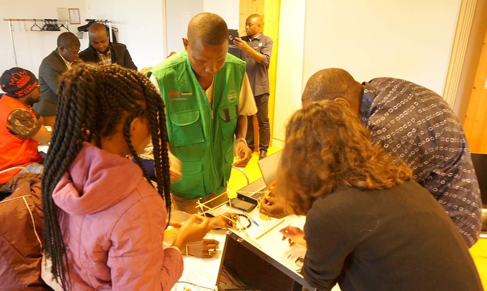
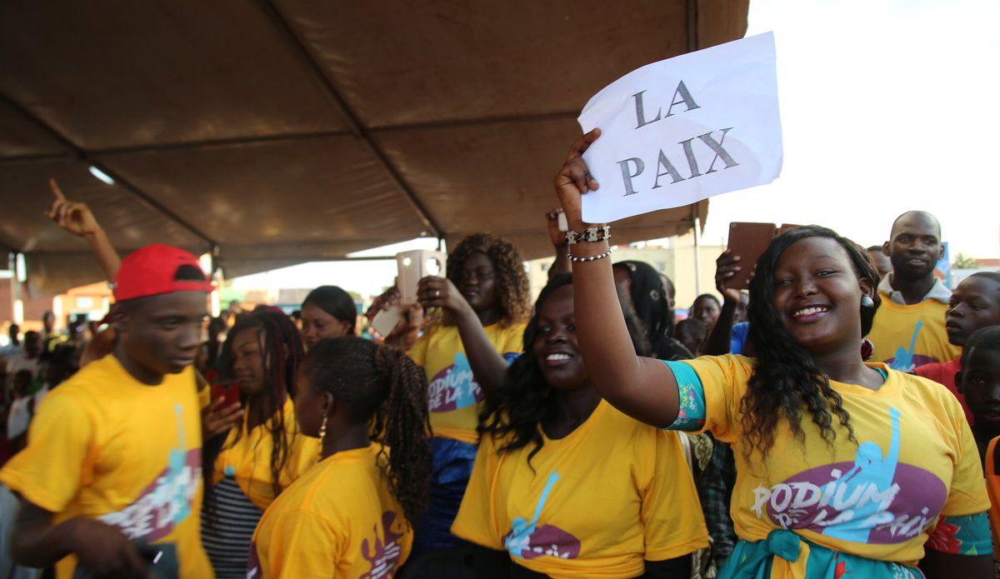
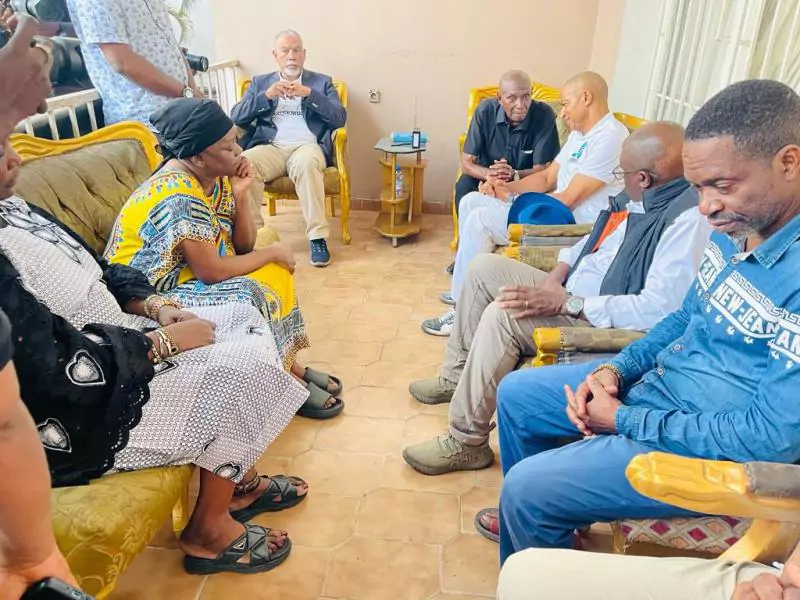
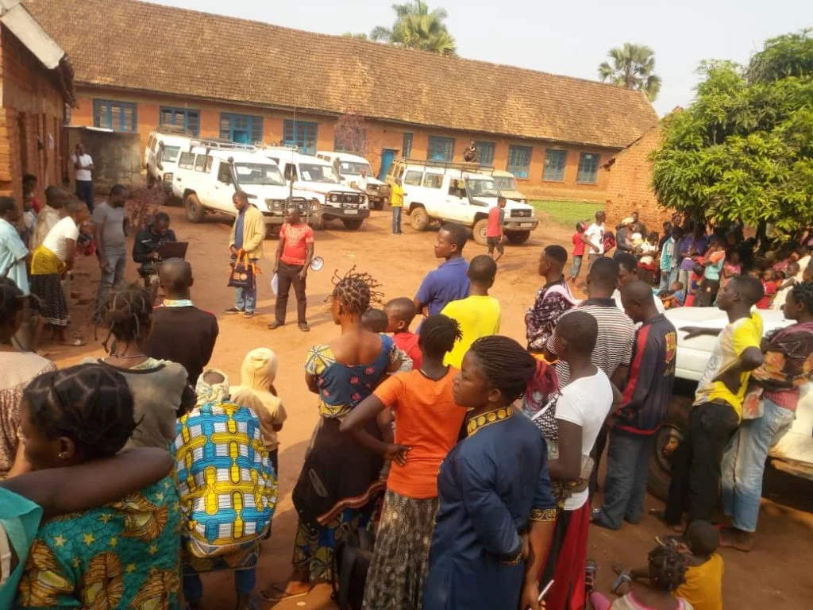
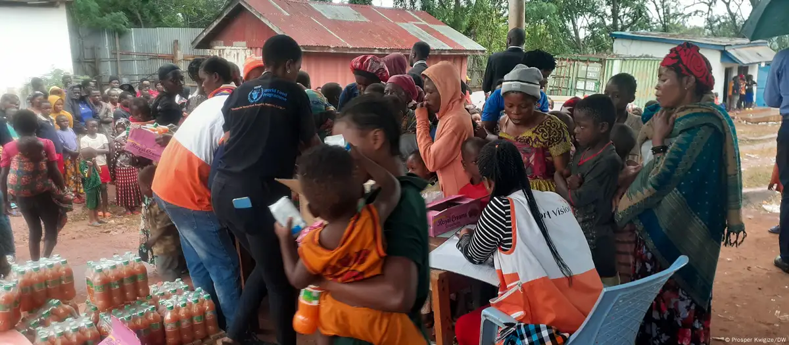
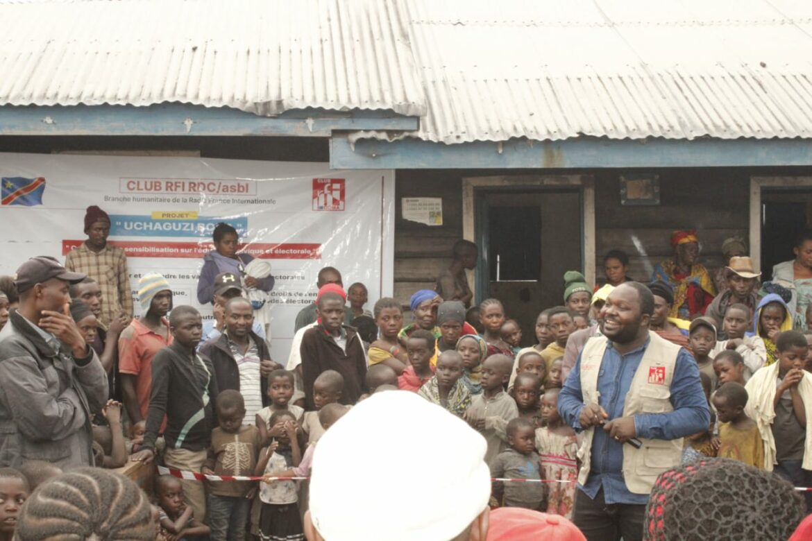

Projet de renforcement des capacités des bénéficiaires THIMO de la ville de Kananga sur le capital humain et l'inclusion productive (MEDAC)/2021. Activités financé par Fonds Social de la RDC (FSRDC) en partenariat avec la Banque Mondiale.

Projet d'appui à la scolarisation des jeunes, particulièrement les filles, dans le contexte de la gratuité de l'enseignement de base et de la pandémie à COVID-19. Appui financier du CORDAID.

Projet de prevention et prise en charge des violences basées sur le genre dans les wones de santé de Bilomba et Ndekesha au Kasaî central decembre 2017 - mars 2018. Convention de partenariat mangna - CAPSEM.

Projet d'appui au renforcement de la cohésion sociale et consolidation de la paix dans les territoire de Dibaya, Dimbelenge et Luiza au Kasaï central.

Projet COD3G42C: Prévention et réponses aux cas de violence sexuelles faites aux refoulé de l'Angola, 12 mois du 30 octobre 2008 au 30 septembre 2009 dans les Territoires de TSHIKAPA et LUIZA dans la province du Kasaï Occidental, avec Pooled Fund 2008 via UNFPA.

Projet COD3R21H : Projet d'urgence à l'appui des femmes expulsées d'Angola dans le territoire de Kamonia; Du 01 janvier au 31 déce,bre 2011; Territoires de KAMONIA et LUZIA avec l'appui de UNFPA.

Projet de renforcement des capacités des bénéficiaires TMI dans le Territoire de Dibaya Les pratiques familiales
essentielles/2022. Activités fiancées par Fonds Social de la RDC (FSRDC) en partenariat avec la Banque Mondiale?
Nous avons expliqué aux bénéficiaires les comportements à favoriser auprès des ménages et des familles pour améliorer
la santé, la croissances et le dévéloppement de l'enfant. Il s'agit de :
Projet de renforcement des capacités des bénéficiaires TMI dans le Territoire de Dibaya Les pratiques familiales
essentielles/2022. Activités fiancées par Fonds Social de la RDC (FSRDC) en partenariat avec la Banque Mondiale?
Nous avons expliqué aux bénéficiaires les comportements à favoriser auprès des ménages et des familles pour améliorer
la santé, la croissances et le dévéloppement de l'enfant. Il s'agit de :
- Faire vacciner les enfants cinq fois au centre de santé le plus proche avant leurs premier anniversaire;
- Nourrir exclusivement au sein (à mamelle) le bébé pendant les six premeier mois;
- Laver les mains à l'eau propre et au savon ou à la cendre avant le repas, après les toilettes ou après avoir changé les couches du bébé
- Faire dormir toute la famille, toutes les nuits sous la moustiquaire imprégné d'insecticides;
- Traiter enfin à domicile les cas de diarrhée avec sérum oral et du zinc et amener les malades au centre de santé en cas de besoin ou de persistance de la diarrhée.
